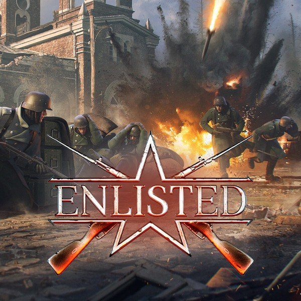

WW1 és WW2 játékok
Enlisted
Az Enlisted egy ingyenes, belső nézetű (FPS) világháborús lövöldözős játék, ami valahol a pörgős Call of Duty és a taktikusabb Hell Let Loose között helyezkedik el félúton. A lényege három pilléren nyugszik:
1. Nem egyedül vagy: Az Osztagrendszer
Ez a játék legnagyobb különlegessége. Nem egyetlen katonát irányítasz, hanem egy 4-9 fős osztagot.
- AI társak: Amíg te lövöldözöl, a gép által vezérelt társaid követnek és segítenek.
- "Második esély": Ha a katonád elesik, azonnal átveheted az irányítást az osztagod egy másik, még életben lévő tagja felett. Addig tart a roham, amíg az utolsó embered is el nem esik.
2. Kombinált hadviselés (Minden egy helyen)
A csatatéren nem csak gyalogosok szaladgálnak. Egy meccsen belül láthatsz:
- Tankokat, amik támogatják a rohamot.
- Repülőket, amik bombázzák az állásokat.
- Mérnököket, akik szögesdrótot, légvédelmi ágyúkat vagy új újjáéledési pontokat építenek.
3. Történelmi hangulat és hatalmas csaták
A játék a második világháború ikonikus helyszíneire visz el (Normandia, Berlin, Sztálingrád, a Csendes-óceán). Mivel minden játékos hozza magával a saját kis csapatát, a képernyőn egyszerre akár százas nagyságrendű katona is harcolhat, ami elképesztő káoszt és filmes hangulatot teremt.
Hel Let Loose
A Hell Let Loose egy hardcore, belső nézetű (FPS) világháborús játék, amely a realizmusra, a csapatmunkára és a hatalmas léptékű csatákra összpontosít. Nem egy klasszikus lövöldözős játék (mint a Call of Duty), hanem inkább egy "háborús szimulátor", ahol az egyéni teljesítmény eltörpül a közös taktika mellett.
A játék fő oszlopai:
- 50 vs 50 fős csaták: Minden mérkőzés 100 valódi játékos összecsapása hatalmas, történelmi térképeken (pl. Omaha Beach, Carentan, Sztálingrád), amelyeket műholdfelvételek és archív fotók alapján alkottak meg.
- Brutális realizmus: Itt nincs "életcsík". Gyakran egyetlen lövés végez veled, a fegyverek visszarúgása hatalmas, a látótávolság pedig döntő. A kezelőfelület (HUD) minimalista, így valóban a szemedre és a füledre kell hagyatkoznod.
- A "Parancsnoki Lánc": A játékosok 6 fős osztagokba rendeződnek. Minden osztagnak van egy vezetője (Officer), aki közvetlenül beszél a főparancsnokkal (Commander). A parancsok fentről lefelé futnak, és a siker azon múlik, hogy az osztagok mennyire hajtják végre a tervet.
- Erőforrás-menedzsment: Ez nem csak lövöldözés. A parancsnoknak nyersanyagokra (üzemanyag, lőszer, emberanyag) van szüksége, hogy tankokat hívjon be vagy tüzérségi támogatást kérjen. Ezeket a mérnökök és a teherautósofőrök biztosítják az utánpótlás szállítása révén.
Milyen élmény játszani vele?
A Hell Let Loose lassú lefolyású és feszült. Előfordulhat, hogy 10 percig csak kúszol a sárban vagy egy sövény mögött várakozol, de amikor kitör a harc, az elképesztően intenzív: süvítenek a golyók, robbannak a gránátok, és a közelben elhaladó tankoktól remeg a képernyő.
Kinek ajánlott?
- Aki szereti a taktikai játékokat, ahol a mikrofon és a kommunikáció fontosabb, mint a gyors reflex.
- Aki értékeli a történelmi pontosságot és a komoly atmoszférát.
- Aki nem dühöng be, ha 20 perc játék után úgy hal meg, hogy nem is látta az ellenséget.

Isonzo
Az Isonzo a harmadik tagja annak a történelmi FPS-sorozatnak (a Verdun és a Tannenberg után), amely az első világháború eseményeit dolgozza fel. Míg a korábbi részek a nyugati és keleti frontra fókuszáltak, az Isonzo az olasz frontra, az Alpok meredek csúcsai közé kalauzol.
Vertikális hadviselés: Harc a hegyekért
Az Isonzo legnagyobb különlegessége a terepviszonyokban rejlik. A csaták nem síkságokon, hanem szédítő magasságokban, sziklákon és gleccsereken zajlanak.
- Fentről lefelé: A magassági fölény itt sorsdöntő. Aki a hegytetőt uralja, az uralja a völgyet is.
- Látványvilág: A játék gyönyörűen adja vissza az olasz táj szépségét, ami éles kontrasztban áll a háború borzalmaival.
"Offensive" játékmód
A játék központi eleme az Offensive mód, amely több szakaszból álló támadássorozatokat modellez.
- A támadóknak át kell törniük a lövészárkokon, át kell vágniuk a szögesdrótokat, és taktikai célpontokat (például hidakat vagy bunkerrendszereket) kell felrobbantaniuk.
- A védőknek rögzített géppuskafészkekkel, aknamezőkkel és a terep adottságait kihasználva kell megállítaniuk az előretörést.
Testreszabás és szerepkörök (Classes)
Hasonlóan a stílus többi játékához, itt is osztályokba sorolva harcolnak a katonák, de az Isonzo bevezetett egy mélyebb fejlesztési rendszert:
- Hasonlóan a stílus többi játékához, itt is osztályokba sorolva harcolnak a katonák, de az Isonzo bevezetett egy mélyebb fejlesztési rendszert:
- Ahogy fejlődsz, új "perk"-eket (képességeket) és kiegészítőket (például távcsöveket, pajzsokat vagy gránátvetőket) nyithatsz meg.
- Történelmi hűség: A fegyverek és az egyenruhák az utolsó gombig hitelesek, a ruházatod pedig a környezethez igazodik (pl. hófehér álcaruha a havas csúcsokon).
Taktikai eszközök: Gáz és tüzérség
Az első világháború technológiája központi szerepet kap. A tisztek jelzőpisztollyal jelölhetik ki a célpontokat, ami után:
- Gáztámadást vezényelhetnek (ekkor mindenki kénytelen felvenni a gázmaszkot, ami korlátozza a látást és a hallást).
- Tüzérségi záport vagy repülőgépes felderítést kérhetnek.

sniper elite 4

sniper elite 5

zombie army 4

A HTML-t készítette: Markwarth Martin
A CSS-t készítette: Takács Sándor